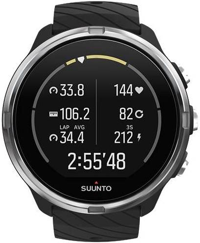
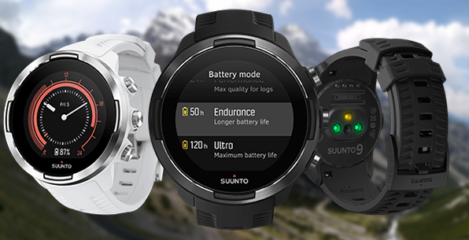

When you’re putting in the hours
There’s nothing worse than running out of battery when you’re in the middle of an epic training run. That is, unless you lose battery and your GPS capabilities, too.
The Suunto 9 multisport GPS watch was designed to combat this all-too-common trail problem with an intelligent battery design — not to mention a rugged, trail-tough construction.

“This watch NEVER STOPS, at all. The Suunto 9 Baro outruns me! Recently, I did a long night trail run, testing the ‘Ultra’ battery mode on my watch. In this mode, the watch minimizes the number of GPS pings and relies on its barometer and built-in compass to accurately measure my distance, speed, and altitude. The watch tracked me perfectly.”
Ryan Montgomery, Suunto Multisport Team Athlete
At a Glance
The Suunto 9 was designed to help serious athletes stay focused on their sport longer with a variety of performance and durability features.
Who benefits from Suunto 9?
The Suunto 9 is an ultra-tough, ultra-long-lasting watch and a great recommendation for ultrarunners, long-distance triathletes, mountaineers and backpackers.
Take it from athlete Kilian Jornet, who put its durability and battery life to the test when he used the Suunto 9 to set the uphill ski record in February 2019 — a whopping 78,274 feet in just 24 hours.

